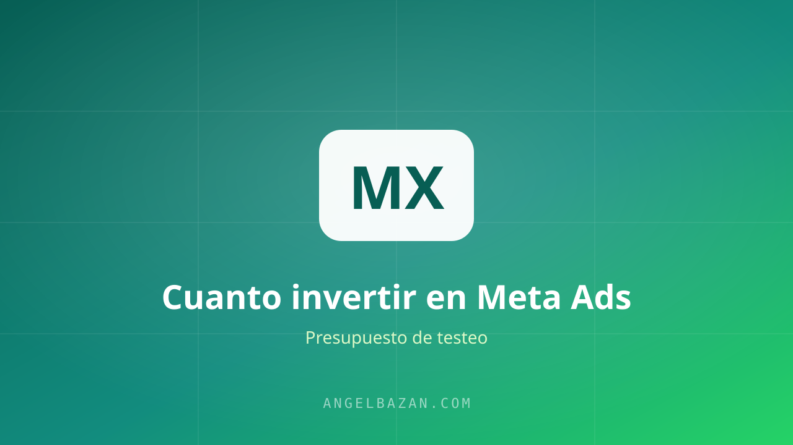

Cuánto invertir en Meta Ads para empezar a vender con WhatsApp
Cuánto invertir en Meta Ads para empezar a vender con WhatsApp: cuánto dejar para un testeo, por qué empezar con poco y cómo escalar la cuenta.
En este artículo
"¿Cuánto necesito para empezar?" es la pregunta que más me hacen. Y la respuesta incómoda es: depende de lo que quieras demostrar. Porque el dinero en Meta Ads no es una apuesta al azar: es el costo de comprar datos para saber si tu oferta vende.

La pregunta correcta no es cuánto, sino para qué
Con poco presupuesto puedes testear una oferta. Con poco presupuesto no puedes escalar ni salvar una oferta mala. Así que primero define la etapa:
- Etapa 1 — Testeo: descubrir si tu oferta vende y cuánto cuesta cada venta.
- Etapa 2 — Validación: confirmar el ángulo y el mensaje ganadores con datos consistentes.
- Etapa 3 — Escalado: subir presupuesto manteniendo (o mejorando) el costo por resultado.
El error típico es querer empezar en la etapa 3. No se puede escalar lo que no está validado.
El presupuesto de testeo: la regla práctica
Mi regla base para un negocio que vende por WhatsApp: el costo por resultado esperado multiplicado por 10, como mínimo. Si tu producto cuesta $50, esperas un costo por venta de $25-$40 y necesitas unas 10 ventas para tener una señal mínima: estamos hablando de un presupuesto de testeo de $250-$400 repartido en 2-3 semanas.
¿Menos? Puedes empezar con $100-$150, pero entenderás que los resultados van a ser ruidosos y difíciles de interpretar. La clave no es el monto absoluto, sino la paciencia para no matar anuncios en 48 horas.
Cómo repartir el presupuesto entre anuncios
Cuando vas a WhatsApp, mi estructura de testeo favorita es:
- 1 campaña con objetivo de mensajes (Conversations) o tráfico a tu enlace con clic directo a WhatsApp.
- 3-5 conjuntos de anuncios (o un solo conjunto con 3-5 anuncios, según tu presupuesto) cada uno con un ángulo distinto.
- Públicos amplios: deja que Meta encuentre a la gente; los intereses detallados son para etapas posteriores.
Reparte el presupuesto de forma que cada anuncio tenga suficiente tráfico: un anuncio con $3/día apenas genera datos en mercados caros. Mejor pocos anuncios bien financiados que muchos anuncios hambrientos.
Cuándo y cómo escalar
Escalas cuando tienes una señal clara: al menos 15-20 resultados con un costo por resultado que te deja margen. Entonces:
- Apaga los anuncios que no pasan el umbral.
- Dobla el presupuesto del ganador cada 2-3 días, sin apresurarte.
- Mide el costo por conversación y por venta, no solo el ROAS.
En WhatsApp el precio es la conversación: cada chat cuesta dinero, así que tu bot o tu agente deben convertir conversaciones en ventas, no acumular chateo.
Los errores que queman presupuesto
- Matar anuncios antes de los 3-4 días: el algoritmo todavía está aprendiendo.
- Cambiar el texto cada día: no le das tiempo a ninguna variante.
- Mandar el tráfico a un WhatsApp sin automatización ni respuesta rápida: un lead que espera horas es un lead perdido.
- Escalar de golpe 10x el presupuesto: rompes el aprendizaje del algoritmo.
Relacionado: cómo pasar de $0 a $10.000 al mes vendiendo por WhatsApp.

Angel Bazán
Especialista en funnels, Meta Ads y WhatsApp + IA. Ayudo a negocios a vender más combinando tráfico pagado con conversaciones automatizadas.
Conoce más sobre mí →Aprende a crear y vender productos digitales con Meta Ads, WhatsApp e IA
Clases en vivo, estrategias y recursos para construir tu sistema desde cero. 🚀
Únete gratis al grupo